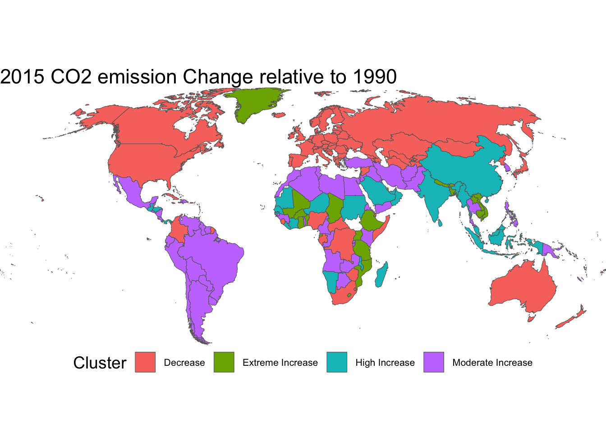

Analyzing Sustainability Indicators Amidst Climate Change
Optional subtitle
Abstract
This page allows user to dive deeper into the content of our blog.
Interactive Map
Here, you can explore the map and how CO2 levels changed year by year. Use the slider below the map to select a specific year and observe the changes in CO₂ emissions compared to previous years. This allows you to closely examine how individual countries have increased or decreased their emissions over time.
If you want full automated visualization: Click the play button to animate the map and watch the year-by-year evolution of global CO₂ emissions.
#| '!! shinylive warning !!': |
#| shinylive does not work in self-contained HTML documents.
#| Please set `embed-resources: false` in your metadata.
#| standalone: true
#| viewerHeight: 650
# Load required libraries inside the shinylive chunk
library(shiny)
library(ggplot2)
library(dplyr)
library(sf)
library(viridis)
# GitHub URL to the RDS file
co2_map_url <- "https://raw.githubusercontent.com/
acstat231-s25/blog-econ/main/Data/co2_map.rds"
temp_file <- tempfile(fileext = ".rds")
# Download the RDS
download.file(co2_map_url, temp_file, mode = "wb")
#Read the downloaded RDS file and load into the system.
co2_map <- readRDS(temp_file)
#User Interface
ui <- fluidPage(
sidebarLayout(
sidebarPanel(
sliderInput("year", "Select Year:",
#Allow the user to choose a year between 1994 and 2022
min = 1994, max = 2022, value = 2022,
step = 1, sep = "",
# Allow the user to animate graph
animate = animationOptions(interval = 1000))
),
mainPanel(
plotOutput("mapPlot", height = "600px")
)
)
)
server <- function(input, output) {
filtered <- reactive(co2_map |> filter(Year == input$year))
output$mapPlot <- renderPlot({
ggplot(filtered()) +
geom_sf(aes(geometry = geometry, fill = co2conc),
colour = "grey40", linewidth = .2) +
scale_fill_viridis_c(option = "viridis", na.value = "grey90",
name = "% change vs 1990",
limits = c(-100, 500)) +
coord_sf(crs = "+proj=robin", expand = FALSE) +
theme_void(base_size = 16) +
theme(legend.position = "bottom",
legend.text = element_text(size = 8)) +
labs(title = paste0("CO₂ emissions relative to 1990: ", input$year))
})
}
shinyApp(ui, server)
Map by clustering
Continuing on the topic of clusters, I’ve decided the cluster the 2015 CO2 data and plot the graph based on 4 levels of CO2 change. The new graph gives a clear persepctive on how countries’ CO2 levels have changed. For example, the decrease in CO2 is prelevant in the developed countries, while the developing countries have experienced moderate to extreme CO2 levels increase. This increase can be atrributed to a very rapid industralization happening in those counties.
Machine Learning
Furthermore, I build a machine learning model which predicts the cluster using 4 variables that we have discussed earlier:
-Renewable energy consumption (% of total final energy consumption)
-Renewable electricity output (% of total electricity output)
-Electricity production from oil sources (% of total)
-Electricity production from coal sources (% of total)
You can observe the test on the actual data that the algorithm ran on, getting 78.6% accuracy.
Predicted
Actual Decrease Extreme Increase High Increase Moderate Increase
Decrease 417 0 4 47
Extreme Increase 1 10 6 4
High Increase 11 6 58 38
Moderate Increase 55 1 15 204[1] "Prediction Accuracy: 0.786"Furthermore, this page allows the policymakers to see how their proposed energy use system will impact the CO2 levels